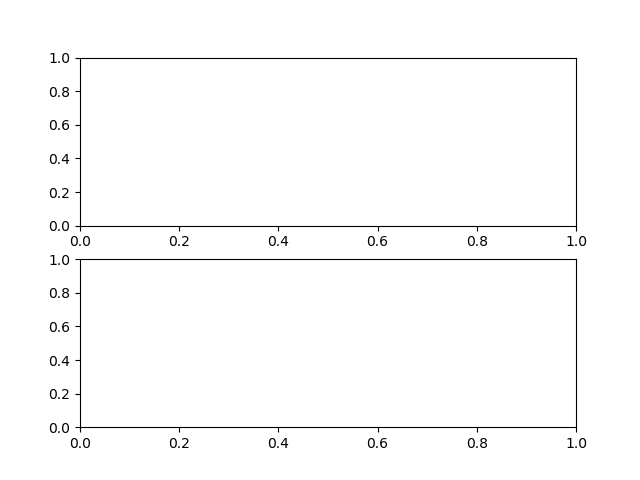

On Nash's theorem and computation of Nash equilibria
We showed that the function \(f=(g,h)\) where \[g(\alpha,\beta)=max\left\{0,\frac{\alpha+u_1(U,\beta)-u_1(D,\beta)}{1+|u_1(U,\beta)-u_1(D,\beta)|}\right\}\] \[h(\alpha,\beta)=max\left\{0,\frac{\beta+u_2(L,\alpha)-u_2(R,\alpha)}{1+|\beta+u_2(L,\alpha)-u_2(R,\alpha)|}\right\}\] has a fixed point using Brouwer's fixed point theorem. Since every fixed point of this function was an equilibrium of out 2x2 game, this proved equilibrium existence. To get a better idea how these \(g\) and \(h\) functions work, we are going to print and plot them here for a simple example: chicken
| L \((\beta)\) | R \((1-\beta)\) | |
|---|---|---|
| U \((\alpha)\) | 0,0 | 2,1 |
| D \((1-\alpha)\) | 1,2 | 1,1 |
We start with some arbitrary strategy profile, say \(\alpha=0.5\) and \(\beta=0.6\), and plug this into \(f\).
from numpy import * import matplotlib.pyplot as plt import matplotlib from prettytable import PrettyTable ##payoffs from our 2x2 game; here chicken game = [[(0,0),(2,1)],[(1,2),(1,1)]] ##strategy profile to start with; first entry is alpha, second is beta start = 0.5,0.6 def g(a,b): utility_difference = b*game[0][0][0]+(1-b)*game[0][1][0]-b*game[1][0][0]-(1-b)*game[1][1][0] return max(0,(a+utility_difference)/(1+abs(utility_difference))), utility_difference def h(a,b): utility_difference = a*game[0][0][1]+(1-a)*game[1][0][1]-a*game[0][1][1]-(1-a)*game[1][1][1] return max(0,(b+utility_difference)/(1+abs(utility_difference))), utility_difference print g(start[0],start[1])[0],h(start[0],start[1])[0]
Python 2.7.15 (default, Oct 15 2018, 15:26:09)
[GCC 8.2.1 20180801 (Red Hat 8.2.1-2)] on linux2
Type "help", "copyright", "credits" or "license" for more information.
Traceback (most recent call last):
File "<stdin>", line 1, in <module>
File "/tmp/babel-SQK2Ok/python-ycThvC", line 4, in <module>
from prettytable import PrettyTable
ImportError: No module named prettytable
python.el: native completion setup loaded
Now some of you might have the following idea: If we plug the result again into \(f\), will we get closer to some equilibrium? What if we repeatedly plug the results of \(f\) back into \(f\)? Will we get to an equilibrium after enough repetitions? Well, let us try:
index = range(1,25,1) x = start[0],0.,start[1],0. a_list = []#will contain the alpha values b_list = []# will contain the beta values d_u_1 = []# will contain utility difference between playing U and D d_u_2 = []# will contain utility difference between playing L and R t = PrettyTable(['alpha','beta']) for i in index: g_return = g(x[0],x[2]) h_return = h(x[0],x[2]) x = g_return[0],g_return[1],h_return[0],h_return[1] t.add_row([round(x[0],3),round(x[2],3)]) a_list.append(x[0]) d_u_1.append(x[1]) b_list.append(x[2]) d_u_2.append(x[3]) print t
Traceback (most recent call last):
File "<stdin>", line 1, in <module>
File "/tmp/babel-SQK2Ok/python-7auKKf", line 2, in <module>
x = start[0],0.,start[1],0.
NameError: name 'start' is not defined
matplotlib.use('Agg') d_u_1_shift = d_u_1[1:] + [x[2]*game[0][0][0]+(1-x[2])*game[0][1][0]-x[2]*game[1][0][0]-(1-x[2])*game[1][1][0]] d_u_2_shift = d_u_2[1:] + [x[0]*game[0][0][1]+(1-x[0])*game[1][0][1]-x[0]*game[0][1][1]-(1-x[0])*game[1][1][1]] plt.figure(1) plt.subplot(2,1,1) plt.plot(index,a_list,'bo',index,b_list,'ro') plt.subplot(2,1,2) plt.plot(index,d_u_1_shift,'b',d_u_2_shift,'r') plt.savefig('chicken.png') return 'chicken.png'

Figure 1: Chicken: \(\alpha\) and \(\beta\) over several iterations (top panel) and corresponsing utility differences (bottom panel)
>>> >>> >>> >>> >>> >>> >>> >>> ... ... ... ... ... ... ... ... ... >>> +-------+-------+ | alpha | beta | +-------+-------+ | 0.25 | 0.6 | | 0.042 | 0.733 | | 0.0 | 0.861 | | 0.0 | 0.93 | | 0.0 | 0.965 | | 0.0 | 0.983 | | 0.0 | 0.991 | | 0.0 | 0.996 | | 0.0 | 0.998 | | 0.0 | 0.999 | | 0.0 | 0.999 | | 0.0 | 1.0 | | 0.0 | 1.0 | | 0.0 | 1.0 | | 0.0 | 1.0 | | 0.0 | 1.0 | | 0.0 | 1.0 | | 0.0 | 1.0 | | 0.0 | 1.0 | | 0.0 | 1.0 | | 0.0 | 1.0 | | 0.0 | 1.0 | | 0.0 | 1.0 | | 0.0 | 1.0 | +-------+-------+ >>> >>> >>> >>> >>> <matplotlib.figure.Figure object at 0x7fe0637f5810> <matplotlib.axes._subplots.AxesSubplot object at 0x7fe0637f5690> [<matplotlib.lines.Line2D object at 0x7fe05585a0d0>, <matplotlib.lines.Line2D object at 0x7fe05585a350>] >>> <matplotlib.axes._subplots.AxesSubplot object at 0x7fe05585a9d0> [<matplotlib.lines.Line2D object at 0x7fe0557f5190>, <matplotlib.lines.Line2D object at 0x7fe0557f5410>]
That seemed to work rather nicely. Will this always work? Unfortunately, the answer is "No". As an example, we do the same that we did above but this time we use the matching pennies game.
| L \((\beta)\) | R \((1-\beta)\) | |
|---|---|---|
| U \((\alpha)\) | 1,-1 | -1,1 |
| D \((1-\alpha)\) | -1,1 | 1,-1 |
##payoffs from our 2x2 game; here matching pennies from numpy import * import matplotlib.pyplot as plt import matplotlib from prettytable import PrettyTable #now we use matching pennies as our game game =[[(1.,-1.),(-1.,1.)],[(-1.,1.),(1.,-1.)]] ##strategy profile to start with; first entry is alpha, second is beta start = 0.5,0.6 def g(a,b): utility_difference = b*game[0][0][0]+(1-b)*game[0][1][0]-b*game[1][0][0]-(1-b)*game[1][1][0] return max(0,(a+utility_difference)/(1+abs(utility_difference))), utility_difference def h(a,b): utility_difference = a*game[0][0][1]+(1-a)*game[1][0][1]-a*game[0][1][1]-(1-a)*game[1][1][1] return max(0,(b+utility_difference)/(1+abs(utility_difference))), utility_difference print g(start[0],start[1])[0],h(start[0],start[1])[0] index = range(1,25,1) x = start[0],0.,start[1],0. a_list = []#will contain the alpha values b_list = []# will contain the beta values d_u_1 = []# will contain utility difference between playing U and D d_u_2 = []# will contain utility difference between playing L and R t = PrettyTable(['alpha','beta']) for i in index: g_return = g(x[0],x[2]) h_return = h(x[0],x[2]) x = g_return[0],g_return[1],h_return[0],h_return[1] t.add_row([round(x[0],3),round(x[2],3)]) a_list.append(x[0]) d_u_1.append(x[1]) b_list.append(x[2]) d_u_2.append(x[3]) print t
Python 2.7.15 (default, Oct 15 2018, 15:26:09)
[GCC 8.2.1 20180801 (Red Hat 8.2.1-2)] on linux2
Type "help", "copyright", "credits" or "license" for more information.
Traceback (most recent call last):
File "<stdin>", line 1, in <module>
File "/tmp/babel-SQK2Ok/python-EUJikt", line 5, in <module>
from prettytable import PrettyTable
ImportError: No module named prettytable
python.el: native completion setup loaded
d_u_1_shift = d_u_1[1:] + [x[2]*game[0][0][0]+(1-x[2])*game[0][1][0]-x[2]*game[1][0][0]-(1-x[2])*game[1][1][0]] d_u_2_shift = d_u_2[1:] + [x[0]*game[0][0][1]+(1-x[0])*game[1][0][1]-x[0]*game[0][1][1]-(1-x[0])*game[1][1][1]] plt.figure(1) plt.subplot(2,1,1) plt.plot(index,a_list,'bo',index,b_list,'ro') plt.subplot(2,1,2) plt.plot(index,d_u_1_shift,'b',d_u_2_shift,'r') plt.savefig('matching_pennies.png') return 'matching_pennies.png'

Figure 2: Matching pennies: \(\alpha\) and \(\beta\) over several iterations (top panel) and corresponsing utility differences (bottom panel)
As you can see, there is some "cycling" going on: Instead of converging to the Nash equilibrium \((0.5,0.5)\), the strategies jump across the NE and repeat every few iterations. The important lesson from all this is the following: Nash's theorem proves that Nash equilibria exist (in finite games) but neither the theorem nor its proof gives us a way of how to compute the/a NE. More generally, fixed point theorems like Brouwer's theorem establish existence of a fixed point but do not help us to find the fixed point. Computation of Nash equilibria (in large but finite games) has been (and still is!) a topic in game theoretic research for a long time (see Herings, P. Jean-Jacques, and Ronald Peeters. "Homotopy methods to compute equilibria in game theory." Economic Theory 42.1 (2010): 119-156 for a survey of some of this literature).